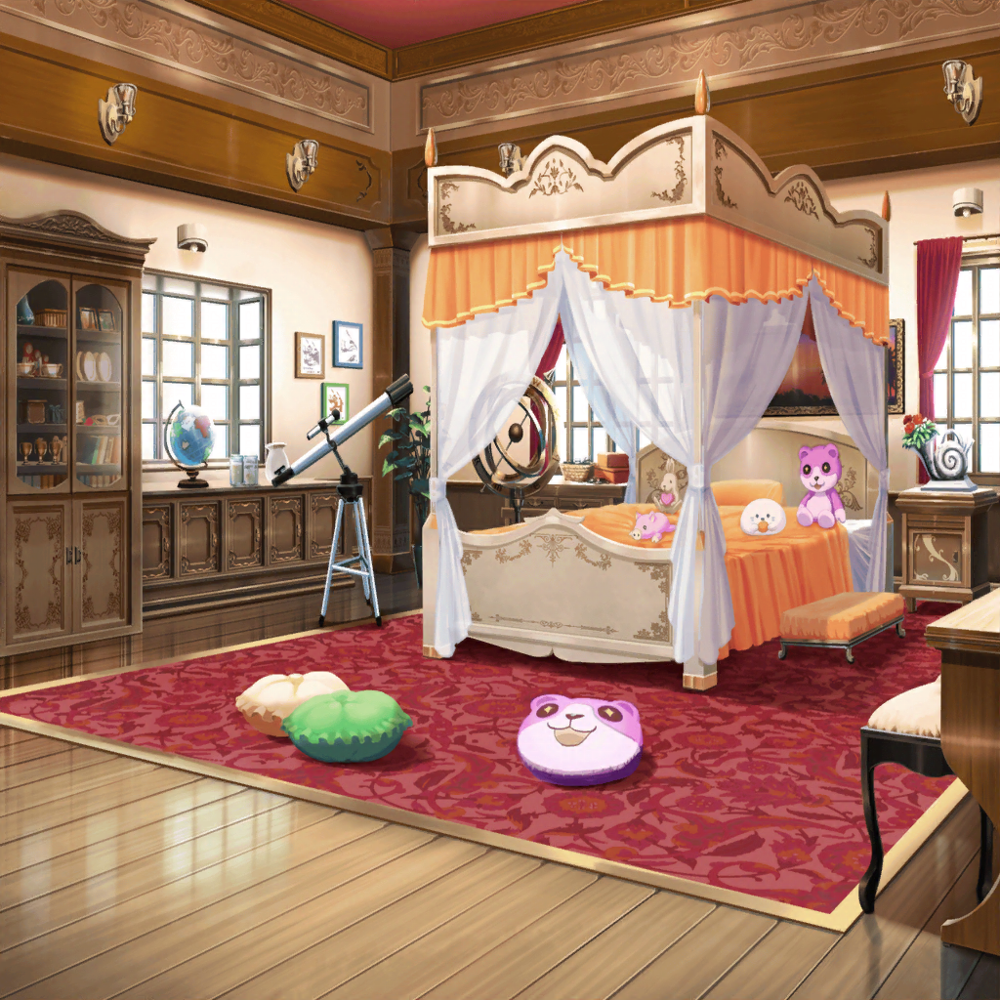

弦巻家 廊下
蘭
あ！ 廊下のセンサーが切れてる！
モカ
なんかわかんないけど、キューちゃんの犠牲は
ムダじゃなかったってことだね
蘭
……けど、相変わらず黒服の警備は厳しいみたい。
隠れながら先に進もう
モカ
おっけ〜。あたしのステルススキルを見せてやろ〜
蘭
……ていうか、あたし達何やってるんだろ？
モカ
え〜、さっきまでノリノリではぐみのこと
丸め込もうとしてたのに〜？
蘭
いや、そうなんだけど……ふと冷静になっちゃって
モカ
これは冷静になったほうが負けってもんよ〜。
ほら、怪盗のスカーレットに戻ってー
蘭
……ま、そっか
モカ
だいぶあちこちまわった気がするけど、
なーーんにもないね。困ったなあ
蘭
歩いてきた道にパンでも落としていけばよかったね
モカ
え〜、そんなことしたらパンがかわいそうだよ〜
蘭
冗談だって。
……ハラペコ、見て！ あの扉
モカ
んー？
『この先、オタカラあり！』
蘭
……怪しい
モカ
けど、あえて飛び込んでみるのもアリじゃない？
蘭
でも、ここであたし達まで捕まっちゃったら、
みんなの犠牲が……
怪盗ハロハッピー
シェイクスピアはこう言っている。
『何もしなかったら、何も起こらない』……と
モカ
お、急に出たー
蘭
ほかの３人はどうしたんですか！
怪盗ハロハッピー
さあ、どこかな？
この扉の先に答えがあるとしたらどうする？
それでも君たちは何もしないのかい？
モカ
うわー、めっちゃ煽られた。スカーレット、どうす……
蘭
そこまで言われたら飛び込むしかないですよね。
いいですよ、瀬田さんの言葉にノッてあげます
モカ
わー、めちゃくちゃ煽られてる〜……
怪盗ハロハッピー
フフ、いい気概だね。さあ、扉をあけるがいい！
小さな怪盗団！
蘭
……よし、いくよ！

弦巻家 こころの部屋
こころ
来たわね、怪盗さんっ！
蘭
こ、こころ！？
モカ
おー、ラスボスがきた〜
ひまり
スカーレット、ハラペコ！
蘭
みんな！ どうやってここに？
ミッシェル
あ、あたしが連れてきました
モカ
親切〜。ありがとね、ミッシェル
こころ
あなた達、ハロハッピーよりもっとすごい怪盗なんでしょう？
名前は何ていうの？
ひまり
私はキュートなリーダー、キューティっ！！
巴
アタシはフェスタ！
こころのお宝、奪いにきたぜ！
つぐみ
わっ、私はバリスタ！
えっと、バリスタっていうのは私の家が喫茶店だからで……
モカ
我が名はハラペコ！
このあたしと直接対決できること、ありがたく思うがいい！
蘭
えっと……す、スカーレット。
よ、よろしく……
ひまり
５人揃って私達、Afterglow怪盗団！
こころちゃんのお宝を奪いに今、ここに参上ー！
こころ
まあ！ とってもステキな自己紹介だわっ！
Afterglow怪盗団さん、すっごくカッコイイのね！
ひまり
ほ、ホント！？
よかった〜……みんな、自己紹介の練習しといてよかったね！
蘭
……なんか、今のダサくなかった？
モカ
反省会はあとにしよ
巴
それで、こころの宝っていうのはどこにあるんだ！？
こころ
お宝ね、そうだったわ！
大切なお宝、ちゃーんと用意しておいたわよっ！！
ひまり
こ、こころちゃんのお宝ってなんだろう！？
もしかしてものすごい金銀財宝！？
つぐみ
な、なんかドキドキしてきた！
こころ
あたしの大切なお宝はね――